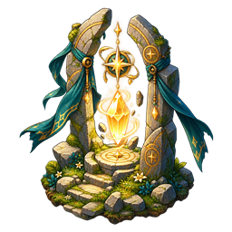

Règles et fonctionnement
Moteur de quêtes à actions
Le serveur suit les actions, les branches et les preuves de résolution d’une quête.
Comprendre ce que cela implique
Une dépendance indique ce qui doit être terminé avant une action. Un lien conditionnel choisit un chemin à partir de la sortie officielle d’une action. Ces mécanismes permettent de proposer des choix sans laisser le navigateur décider librement d’une réussite.
Une action écartée n’est pas une action accomplie : son état skipped permet de fermer une branche devenue impossible. Pour un combat à plusieurs sorties, une défaite reconnue peut être une résolution ; les récompenses réservées à la victoire doivent donc être explicitement filtrées.

Dans cet article
- Sorties et liens conditionnels
- Fichiers
- Utilisation serveur
- Lieux du scénario : placement, visibilité et cycle de vie
- État du raccordement et validation
- Réutilisation des lieux du scénario
- Deuxième mission : Les prospecteurs perdus
- Apparition des lieux déclarée dans le scénario
- Journal et acceptation explicite
- Contrat de coopération en conception — 20 octobre 2026
- Présentation du journal
Détails de référence
Texte de référence mis en forme et conservé dans l’historique de cet article. Les paragraphes datés peuvent décrire une évolution ou une étape antérieure.
Pour le template JSON, la liste des champs, les sept fiches d'action, les dialogues, conditions, créations, conséquences et transitions, consulter Concevoir une quête. Ce guide distingue les dépendances, objectifs parallèles et embranchements maintenant disponibles dans le moteur. L'éditeur visuel reste prévu ; son format de progression serveur est déjà utilisable dans une fiche JSON.
Sorties et liens conditionnels
actions[].outputs déclare les sorties nommées. links relie from, output et to, avec des conditions serveur facultatives, évaluées une seule fois à la sortie de l'action source, après les effets de sa réaction ActionCompleted. Une action ciblée par un lien n'est pas active au départ. join: "any" (défaut) attend un lien sélectionné ; join: "all" les attend tous. requires continue d'exiger toutes les dépendances, en plus des liens. Les cycles mixtes sont refusés.
Parler utilise le goal du choix officiel comme sortie déclarée ; dialogue.goal n'est plus nécessaire si outputs est présent. Combattre peut déclarer victory, defeat, draw ; les preuves restent officielles et uniques. Sans outputs, la règle historique de victoire reste inchangée. Les autres actions utilisent la sortie success par défaut.
La sortie obtenue et les décisions des liens sont sauvegardées. Une branche impossible devient skipped, sans interaction ni récompense. Cette exclusion se propage aux dépendances et aux liens descendants. La quête réussit lorsque toutes les actions sont terminées ou écartées. terminalOutcome: "success" ou "failure" permet une fin explicite ; les actions restantes sont alors écartées. Les récompenses d'action sont liées à la résolution : pour un combat à sorties, une défaite déclarée est une résolution, pas un refus technique. Réserver les effets propres à la victoire aux réactions filtrées par actionId et output.
La jonction any ne supprime pas un autre chemin déjà sélectionné. Plusieurs liens de la même sortie peuvent ouvrir plusieurs objectifs parallèles. Pour un choix exclusif, déclarer des sorties distinctes. Sans liens ni sorties, les fiches et les sauvegardes existantes gardent leur progression historique.
Quest représente une fiche immuable, sérialisable et validée. Le nouveau format contient actions, requires, prerequisites, events, outcomes, publicationCondition, accessConditions et participationModes. Les sept actions sont Atteindre, Parcourir, Prendre, Donner, Parler, Construire et Combattre. Les timers et les pass artificiels sont supprimés. Les anciennes phases restent lisibles par Quest, mais ne sont pas exécutées par le nouveau moteur. Les composites restent à convertir ou à implémenter.
Fichiers
app/js/core/quest.js: définition et validation, dont les cycles de requires.app/js/core/quest-engine.js: publication, acceptation, progression, événements, récompenses, abandon, compétition et sérialisation.server/quests/quest-service.js: adaptateur serveur de Game.data/quests/royal-fort-supply.json: ravitaillement avec quatre collectes parallèles, sans timer. Les récompenses vont à l'acteur par défaut ; ajouterrecipient: "participants"pour récompenser chaque participant.data/quests/royal-fort-supply-dialogues.json: dialogue à choix et résultat.
Utilisation serveur
const quests = new QuestService({
definitions: [ravitaillement],
dialogues,
getGame: () => lobby.game,
replaceGame: (restored) => {
lobby.game = restored;
},
now,
});
quests.command(player.id, { type: "publish", questId: ravitaillement.id });
quests.command(player.id, {
type: "accept",
questId: ravitaillement.id,
mode: "solo",
});
quests.command(player.id, { type: "act", instanceId, actionId, choiceId });
quests.dispatchOfficialEvent(
{ id: event.id, type: "LocationEntered" },
player.id,
);L'identité vient de la session authentifiée. Les événements sont produits par les services du serveur et ne doivent jamais être exposés comme commandes client libres. Les boutons proviennent de engine.interactions(instanceId, player.id, locationId).
Le service vérifie présence, quantités, capacités, choix de dialogue et preuves officielles de construction ou de victoire. Atteindre, Parcourir, Construire et Combattre peuvent être vérifiés à la réception d'un événement officiel. Parcourir utilise la distance officielle cumulée depuis le déblocage. Une action réussit une fois ; les effets font partie de la transaction. Une erreur restaure le monde et le moteur. Game conserve questEngineState.
Les pré requis sont créés à accepted, published ou à un événement nommé. Les stocks sont réservés à l'instance dans les données serveur, séparés des stocks ordinaires ; scope: "world" permet un stock commun. Les lieux créés utilisent Location avec une position explicite validée dans la zone de jeu. Le placement automatique différé reste à raccorder. Les objets transportables créés sont des données de bagages ; les récompenses d'items utilisent le catalogue existant. Prendre peut donc représenter l'acquisition d'un indice.
Lieux du scénario : placement, visibilité et cycle de vie
Les fiches référencent les identifiants logiques du scénario (locationSlotId, lieu, origine, destinataire, targetLocationId). Le service les résout vers les lieux officiels. Une quête qui utilise un village ou une mine existants ne doit pas les recréer dans prerequisites ni modifier leurs coordonnées pour les rendre visibles. Leur placement et leur contrat world restent définis dans la fiche du scénario : rôle, visibilité, durée de vie et, si nécessaire, déclencheurs appearance et world.removal.
Une fiche peut exiger un lieu placé avec { "type": "locationPlaced", "locationId": "royal-gold-mine" }, ou visible pour le participant avec { "type": "locationVisible", "locationId": "gold-mine" } dans publicationCondition ou accessConditions. Ces conditions sont indépendantes : un lieu durable peut être placé mais encore inconnu. Ne pas exiger sa visibilité pour une quête dont l’objectif est précisément de le découvrir. La fiche Ravitaillement exige maintenant les placements confirmés de la capitale, du fort et des quatre villages avant acceptation ; elle réutilise ces lieux.
Le serveur valide le placement confirmé et la visibilité du joueur avant d’accepter une présence utilisée par Atteindre, Prendre, Donner, Parler ou Construire, ainsi qu’au lieu qui propose la quête. Une ancienne présence enregistrée dans un lieu encore à placer ne suffit pas. Le retrait d’un élément éphémère à la fin d’une quête, en cas d’échec ou d’abandon, est conservé par participant ; il ne retire pas un lieu durable découvert.
Les éléments éphémères déclarés comme slots du scénario suivent déjà ces règles. Les créations libres prerequisites conservent leur chemin existant à position explicite : leur placement différé et leur raccordement au contrat world restent à développer. L’exploration préalable devra confirmer une zone sans créer de lieu, puis l’allouer plus tard ; Parcourir seul ne réalise pas cette allocation. Voir docs/scenario-map-definition.md. Les constructions des joueurs sont exclues.
La progression est partagée en équipe ; un membre peut réussir une action, ou une action peut déclarer assignedPlayerId. La compétition conserve le premier gagnant et termine les autres instances concurrentes en échec. Les réactions sont uniques par défaut ; repeat: true traite chaque id d'événement une fois. Les enchaînements publient les quêtes suivantes selon le résultat, sans les accepter automatiquement.
État du raccordement et validation
Le ravitaillement et Les prospecteurs perdus sont raccordés aux commandes authentifiées, aux mises à jour de position, aux fiches de lieux, aux dialogues et au journal. QUEST_ENGINE_ENABLED active ces deux missions ; QUEST_SYSTEM_ENABLED reste false pour conserver les anciennes quêtes désactivées. Le serveur publie chaque quête au démarrage ou à la reprise des mondes contenant tous ses lieux. Les noms logiques de la fiche sont associés aux lieux réels par les bindings du scénario. Les clients reçoivent seulement leur vue du journal et leurs boutons ; les stocks privés et les conversations internes ne sont pas transmis.
La validation des prospecteurs couvre le parcours serveur en GPS et simulation, la reprise, les preuves de combat et l’application unique des récompenses. Voir docs/missing-prospectors.md. Le ravitaillement reste disponible directement sans exiger l’ancienne mission d’évacuation.
Réutilisation des lieux du scénario
Les fiches à actions peuvent référencer les identifiants de locationSlots du scénario dans locationSlotId, lieu, origine, destinataire et locationId. Le service serveur QuestService résout ces références avec game.scenarioLocationBindings, y compris dans les dialogues, conditions, récompenses et conséquences. Les identifiants officiels de lieux sont aussi acceptés.
Exemple : {"action":"Prendre","origine":"royal-gold-mine", ...} utilise la mine déjà présente dans la partie. La fiche ne fournit ni coordonnées ni nouvelle mine. Le catalogue original reste inchangé.
Un lieu référencé absent est refusé avant publication. Le ravitaillement devient indisponible si un de ses lieux manque. Les créations de lieux temporaires explicitement déclarées dans les prérequis restent possibles ; aucune création automatique ne remplace un lieu du scénario manquant.
Villages partagés du ravitaillement
Le ravitaillement utilise les quatre villages économiques existants autour de la capitale : Aurive (capital-resource-gold-village), Ferrières (capital-resource-iron-village), Boisclair (capital-resource-wood-village) et Rochevive (capital-resource-stone-village). La fiche référence leurs emplacements officiels pour les conditions, les arrivées, les collectes et les révélations. Elle crée seulement cinq rations réservées à l'instance dans chaque village ; elle ne crée aucun village et ne remplace pas leurs stocks économiques. Les quatre collectes restent parallèles et la livraison reste de vingt rations. Le fort de Rochegarde est le seul lieu spécifique au ravitaillement.
Les anciens emplacements supply-village-* sont retirés du catalogue et de la préparation des nouvelles parties. Les références de l'ancien scénario désactivé, y compris Les greniers du roi à Aurive, utilisent les villages partagés. Une partie déjà sauvegardée peut conserver les anciens lieux : ce changement ne supprime pas les lieux des sauvegardes existantes.
Deuxième mission : Les prospecteurs perdus
Le catalogue serveur contient les deux fiches à actions et leurs dialogues. La projection sélectionne chaque fiche par questId : une instance acceptée n’efface pas l’offre d’une autre mission. Le journal utilise le bilan propre à la fiche. Les victoires sont vérifiées avec les batailles officielles à leur résolution ; les marqueurs de type quest permettent une fouille sans chef de lieu. Les autres lieux conservent leurs contrôles d’accès usuels.
Apparition des lieux déclarée dans le scénario
Le champ appearance des locationSlots définit immediate, QuestAccepted ou ActionCompleted. Le service serveur synchronise le registre d’apparition avec les instances validées du moteur à chaque sauvegarde de progression et à la reprise. Cette règle de scénario ne dépend pas d’un effet revealLocation dupliqué dans la fiche de quête. Les prospecteurs utilisent ce contrat pour le camp, les indices, le champ de bataille et la mine. Les quêtes existantes peuvent conserver leurs effets revealLocation pour enrichir les renseignements sans modifier l’apparition. Les positions cachées ne sont pas transmises et la présence n’est pas accordée avant apparition au participant.
Journal et acceptation explicite
Une proposition consultée auprès d’un chef ou à la taverne ne crée aucune entrée persistante dans les quêtes du héros. Seule l’acceptation validée par le serveur enregistre la mission active. « Plus tard » laisse le journal inchangé. Le journal est rafraîchi à réception de l’état officiel, y compris lorsqu’un écran de gestion est ouvert. Les missions du moteur sont séparées entre missions en cours et historique, avec progression et objectifs ; les offres restent chez leur donneur. Cette présentation ne modifie ni les récompenses ni les conditions de réussite.
Lisibilité du journal — 17 octobre 2026
La page des quêtes reprend les surfaces parchemin clair, l’encre brune et la progression dorée des autres menus. Les anciens fonds verts des offres et résultats sont supprimés. Les objectifs indisponibles gardent un texte opaque lisible. Ce changement de présentation ne modifie aucune règle ni sauvegarde de quête.
Contrat de coopération en conception — 20 octobre 2026
Le champ optionnel cooperation de la quête définit mode (solo/open/leader/together), minimumPlayers, maximumPlayers, invitation (ga-messenger) et joinInProgress (allowed/closed). Il est conservé par Quest et sa validation impose des effectifs cohérents. Le champ cooperation.type des actions accepte simultaneous, roles, relay et contribution et nécessite une quête multijoueur. Ces données décrivent une intention de conception ; leur exécution serveur reste à développer, sans modification de la progression ni des récompenses actuelles. Voir quest-editor.md pour les événements stratégiques et leurs blocs.
Présentation du journal
Les quêtes sont présentées dans des blocs compacts repliés au départ, avec leur titre et leur statut ou catégorie. Un bouton permet de déplier les objectifs, la progression, le bilan et les actions disponibles. Le choix ouvert ou fermé est conservé pendant les rafraîchissements du journal. Cette présentation concerne les missions du moteur, de campagne, annexes et d’équipe ; elle ne modifie ni les objectifs ni les commandes validées par le serveur.